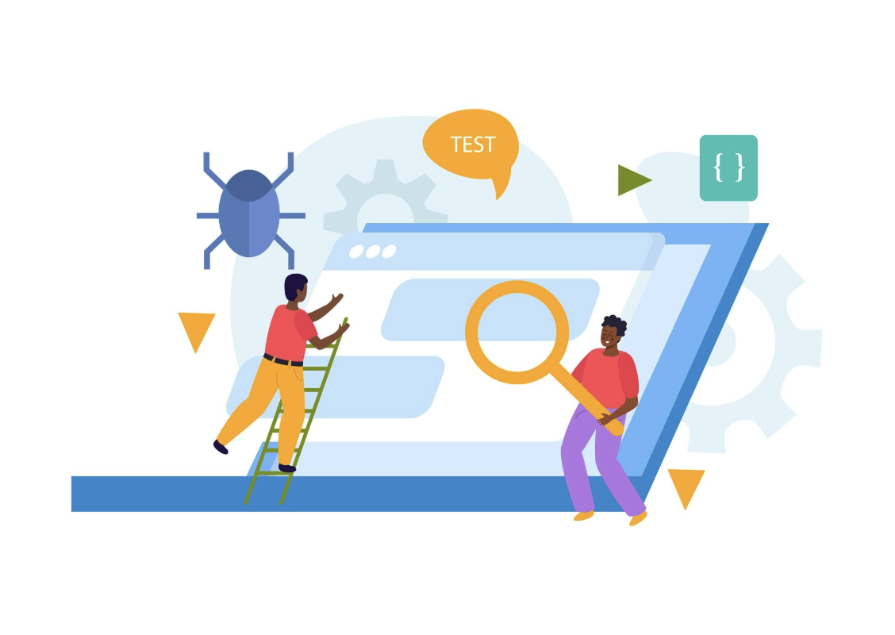

Core Philosophy
The foundation of what we do

Listen deeply to donors (and data)
Great systems start with empathy. We use data to understand what your donors truly value.

Design systems, not just campaigns
Campaigns end. Systems grow. We build infrastructure that keeps delivering results.

Test, measure, iterate
We don't guess. We test. Every decision is backed by real-world performance data.
Services Offered


Book your free
consultation now
Get free consultation for digital initiatives, insights on your target audiences and website performance analysis.
Book Now